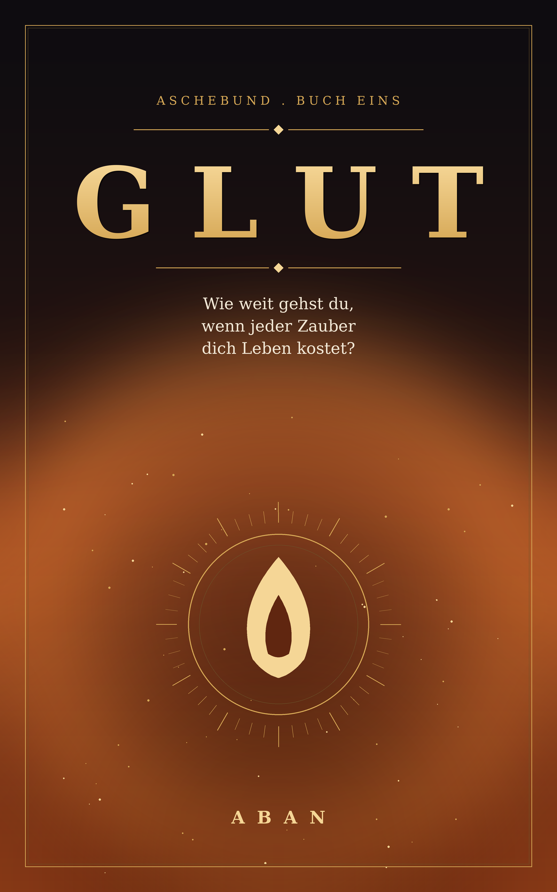

Wie weit gehst du, wenn jeder Zauber dich Leben kostet?
Erscheint bald. Trag dich in den Newsletter ein – du erfährst es zuerst.
Benachrichtigt werden, wenn es erscheintIm Aschekonkordat von Vyr binden sich Drachen nur an Menschen, die bereits im Sterben liegen. Die Bindung hält dich am Leben – aber jeder Zauber verbrennt deine Tage. Mächtige Reiter altern jung, mit grauem Haar und gezählter Zeit.
Als die todkranke Sayra Vael zur berüchtigten Akademie Korvath gebracht wird, bindet sich gegen jede Regel der uralte, todmüde Drache Kaelith an sie. Zwischen brutaler Ausbildung, einem Ausbilder, den sie hassen will, und einer Wahrheit, die ihren Vater das Leben kostete, begreift Sayra: Das Reich ruht auf einer Lüge – und sie trägt den ersten Beweis in einer Erinnerung, die nicht ihre eigene ist.
Der Aschewagen roch nach Menschen, die schon aufgegeben hatten.
Sayra Vael saß mit dem Rücken an die Bohlen gepresst und zählte die anderen, weil Zählen besser war als Atmen.